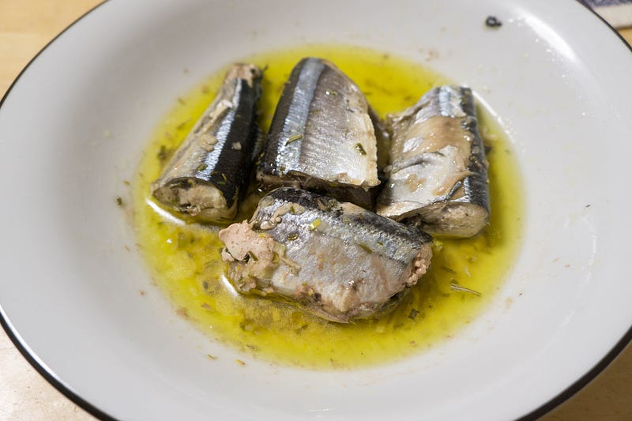
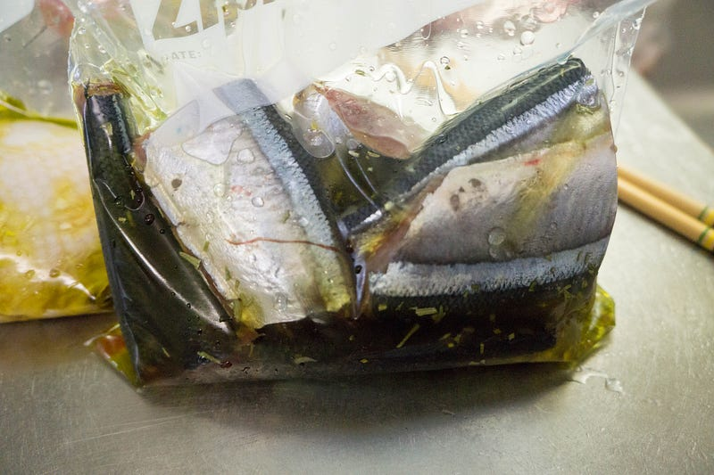

anovaで秋刀魚のコンフィ
anovaで秋刀魚のコンフィ
anovaで秋刀魚のコンフィ。なんかパスタとかと和えようかとも思ったけど、朝食に白ご飯で食べても大変おいしかった。

前回はこちら
パンドラの箱を開けたので鶏胸肉のコンフィを作って見た
「え、鶏もも肉じゃなくて？」と言われそうだが、コンフィ自体は作った事何回もあるし、本当に作りたいのは秋刀魚のコンフィだし、いいんです。medium.com
「え、鶏もも肉じゃなくて？」と言われそうだが、コンフィ自体は作った事何回もあるし、本当に作りたいのは秋刀魚のコンフィだし、いいんです。medium.com
我が家では今のところanovaは「肉を低温調理」するのに使っておらず、どちらかというと安定して温度を調整できることと、ジップロックを使うので油の量を大分節約できることからコンフィ作りに使っている。今のところ。

秋刀魚の頭と内臓を取って、塩を気持ち強めにかけておいて、しばらくペーパータオルの上とかに放置。このときは2時間くらいかな。
（2018/10追記）文献を色々読んだ結果、以下のように作り方を変えた。まず、たっぷりの砂糖をまぶして、1時間ほど冷蔵庫に入れておく。その後、水で砂糖を洗い流して、同じくたっぷり目の塩で味付けをする。そしてまた1時間くらい待って、その後加熱をする。この方が秋刀魚の味が強くていいと感じてます。追記終わり
ジップロックにニンニクみじん切りとローズマリー、それにオリーブオイルとサラダオイル、そして秋刀魚をいれておく。油を2種類使っているのはオリーブオイルを節約しているだけです。
ちなみに上記写真の後ろに鶏もも肉のコンフィもあるが、こちらは子供らに食われてしまったために写真がないのでここでは紹介を割愛。
anovaで80℃で1時間半。もう少し早めにあげてもいいのかもしれない。
(2018/10追記）温度は70℃で1時間半、というところまで変更しました。もう少し温度を落としてもいけそうな気がする。追記終わり。